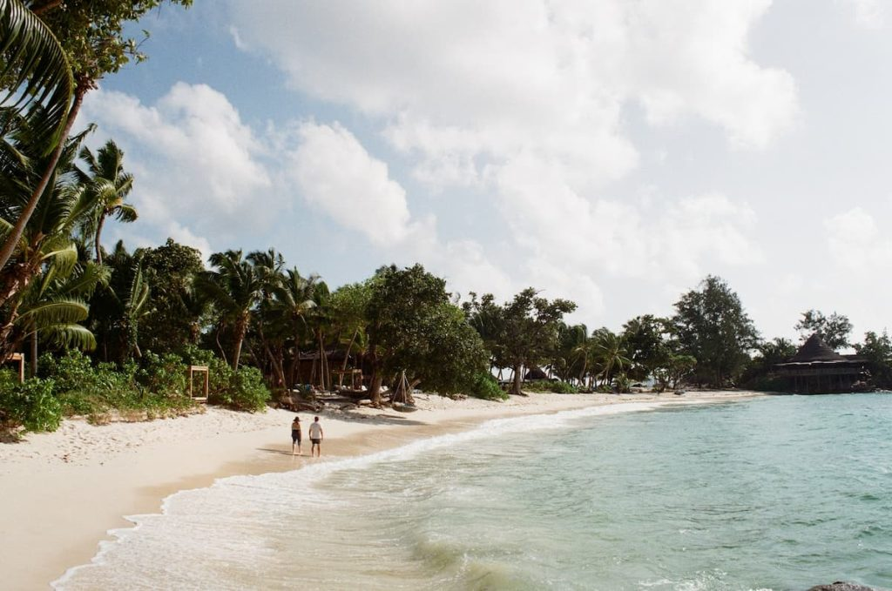

Anse Souce d’Argent é a mais bela praia entre todas as 115 ilhas do arquipélago de Seychelles. Rodeada por rochas de granito, a praia tem areias brancas e águas cristalinas. Um cenário estonteante de mar muito calmo, graças a uma barreira de corais. Anse Source d´Argent também está presente em diversos rankings como a praia mais bela do mundo pela Forbes, CNN, Global Experiences e Travelller’s World Magazine. Essa praia também ganhou o título de patrimônio da humanidade pela Unesco. Ou seja, se você procura uma praia belíssima, calma e de mar quente e azul, Anse Source d’Argent é o destino perfeito.